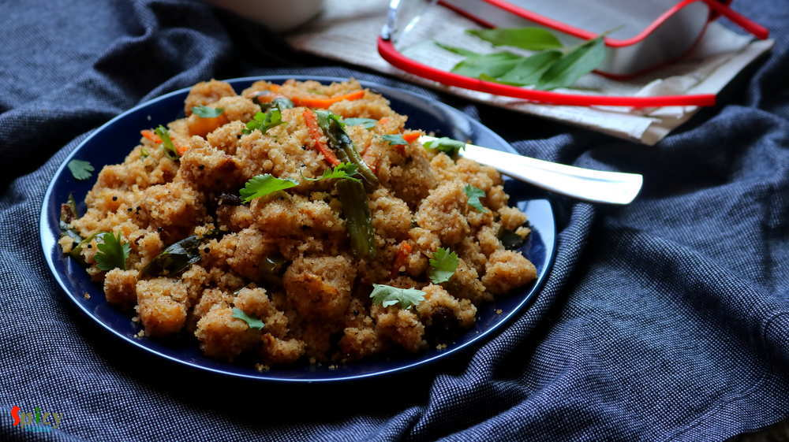

Simple and Easy Recipes
Upma / ঝাল সুজি
© 2016 Spicy World, Published on: Sep 4, 2018
Upma is a very healthy and tasty Indian breakfast, in which the main ingredient is semolina. It is very popular in southern part of Indian. But nowadays Upma is served in many other households also. Almost twice in a week my mom used to give me 'jhal sooji'(Bengali term) in my lunchbox. It's not just me, my friends also enjoyed it. The fresh flavors of curry leaves and green chilies, proteins from lots of vegetables will always make this breakfast tasty and healthy. The recipe is very simple and easy. Try this in your kitchen and let me know how it turns out.

Ingredients
- 1 cup of Semolina / Sooji / Rava.
- 1 onion, thinly sliced.
- 1 cup of julienne cut Mixed vegetables (potatoes, carrots, capsicums, green beans).
- 3-4 green chilies. thinly sliced.
- Few raisins and cashews.
- 1/4th Teaspoon of black mustard seeds.
- 7-8 curry leaves.
- Salt and sugar.
- 3-4 Tablespoons of cooking oil.
- 1 and half cups of boiling hot water.
- 1/4th Teaspoon of ghee.
- Some chopped coriander leaves.


Steps
Heat oil in a pan.
Add black mustard seeds and curry leaves. Saute for few seconds.
Then add onion slices and fry for 2 minutes.
Add the mixed vegetables along with some salt and fry for 10 minutes on low flame by covering the pan.
Then add very little (4 Tablespoons) water, just to steam the vegetables. Cover the pan and cook for 5 minutes on low flame.
When the vegetables become soft, add the raisins and cashews. Fry for 2 minutes. Then add semolina. Fry for 5 minutes on low flame.
Then add some salt and pinch of sugar as per your taste. Mix well.
After that add the boiling hot water and immediately start mixing it for a minute.
Cover the pan, turn off the heat and let it rest for 3-4 minutes.
Lastly add ghee and coriander leaves, mix well and let it rest for another minute.
Your upma or jhal sooji is ready ...
Serve hot with a cup of tea or ketchup ...
")